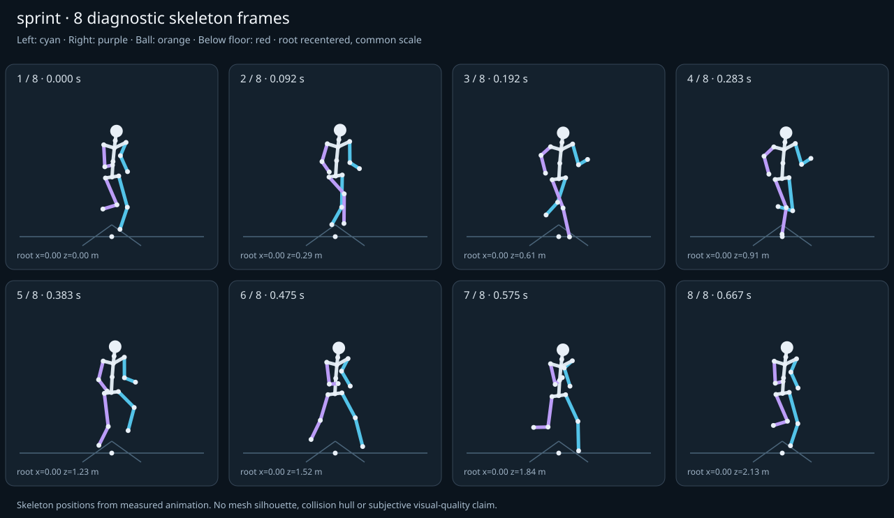

כל הקליפים · תצוגת התנועה · JSON המקור
ציון 89.2 · כיסוי 100%
הסוליות נמדדות בתרחיש תנועה חיצוני מוצהר; Root בנכס נשאר קבוע. הרציפות משתמשת בפוזה המקומית.

| מדד | מצב | ערך | ציון | ראיות |
|---|---|---|---|---|
| החלקת רגליים | ירוק | 0.000661 | 98.68 | ראיות מקוריות{
"coordinateSpace": "native GLB plus explicitly declared external actor position and heading, applied once",
"supportSource": "declared",
"windows": 3,
"samples": 55,
"maxDriftMeters": 0.001117,
"p95SpeedMetersPerSecond": 0.051435,
"worst": {
"bone": "RightFoot",
"t": 0.446667,
"start": 0.233333,
"end": 0.446667,
"driftMeters": 0.001117
}
} |
| חדירה לרצפה | ירוק | 0 | 100 | ראיות מקוריות{
"samples": 1660,
"floorY": 0,
"probeKind": "declared sole probes plus skeletal joint centers (no mesh surfaces)",
"maxDepthMeters": 0,
"worst": {
"t": 0,
"bone": "LeftFoot",
"depthMeters": 0,
"y": 0.004
}
} |
| קפיצות פוזה | צהוב | 1.510962 | 69.78 | ראיות מקוריות{
"adjacentPairs": 82,
"observations": 1394,
"maxDegrees60Hz": 14.534765,
"maxMarkerStepHeight60Hz": 0.060438,
"maxRootStepHeight60Hz": 0.031558,
"worst": {
"ratio": 1.5109622149984823,
"t": 0.333333,
"previousTime": 0.325,
"bone": "LeftLeg",
"markerStepHeight60Hz": 0.060438,
"degrees60Hz": 8.211671
}
} |
| חריגות אנטומיות | ירוק | 0 | 100 | ראיות מקוריות{
"testedFrames": 83,
"affectedFrames": 0,
"checks": 1411,
"maxLimbFlexionDegrees": 118.418867,
"maxRelativeSegmentLengthChange": 0,
"hingeDirectionChecked": true,
"axialTwistChecked": false,
"violations": []
} |
| מגע בכדור | לא חל | — | — | ראיות מקוריות{} |
| כניסה ויציאה מול המתנה | צהוב | 2.110942 | 63.34 | ראיות מקוריות{
"entry": {
"ratio": 2.1109419164732333,
"t": 0,
"idleTime": 3.833333,
"markers": 17,
"rmsPositionHeight": 0.084438,
"rmsRotationDegrees": 29.943037,
"rmsVelocityHeightPerSecond": 1.32947,
"velocityEvaluated": true
},
"exit": {
"ratio": 2.1109419264133775,
"t": 0.666667,
"idleTime": 3.833333,
"markers": 17,
"rmsPositionHeight": 0.084438,
"rmsRotationDegrees": 29.943039,
"rmsVelocityHeightPerSecond": 1.370461,
"velocityEvaluated": true
},
"worstEndpoint": "exit",
"alignment": "horizontal root translation; raw asset poses used when provided"
} |
| מהירות גוף מול צעדים | ירוק | 0.001606 | 99.84 | ראיות מקוריות{
"rootSource": "sampled presented root",
"rootSpeedMetersPerSecond": 3.2,
"observedRootSpeedMetersPerSecond": 3.2,
"referenceRootSpeedMetersPerSecond": 3.2,
"supportSource": "declared",
"backwardSweepSpeedMetersPerSecond": 3.205146,
"cadenceStepsPerSecond": 4.5,
"impliedStrideMeters": 1.42451,
"rootStrideMeters": 1.422222,
"supportSweeps": [
{
"bone": "LeftFoot",
"start": 0,
"end": 0.113333,
"duration": 0.113333,
"sweepMeters": 0.363765,
"speedMetersPerSecond": 3.209687
},
{
"bone": "LeftFoot",
"start": 0.566667,
"end": 0.666667,
"duration": 0.1,
"sweepMeters": 0.32,
"speedMetersPerSecond": 3.199999
},
{
"bone": "RightFoot",
"start": 0.233333,
"end": 0.446667,
"duration": 0.213333,
"sweepMeters": 0.683765,
"speedMetersPerSecond": 3.205146
}
]
} |
| סימטריה | ירוק | 0 | 100 | ראיות מקוריות{
"mode": "gait",
"modeSource": "declared",
"structuralMismatch": 0,
"segments": [
{
"segment": "Arm-ForeArm",
"mismatch": 0
},
{
"segment": "ForeArm-Hand",
"mismatch": 0
},
{
"segment": "UpLeg-Leg",
"mismatch": 0
},
{
"segment": "Leg-Foot",
"mismatch": 0
}
],
"motionRmsHeight": 0,
"worstMotion": {
"t": 0.3,
"errorHeight": 0
},
"bilateralPoseRmsHeightUnscored": 0.226363,
"note": "Motion is mirrored in a pelvis-centred body basis."
} |